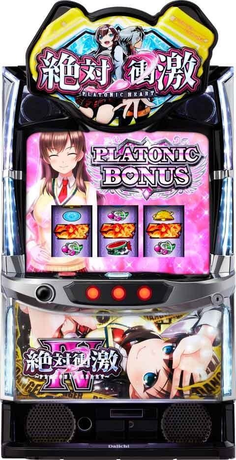
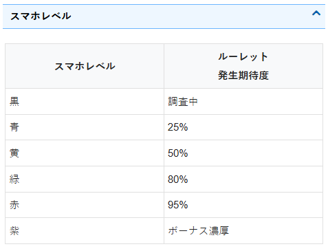
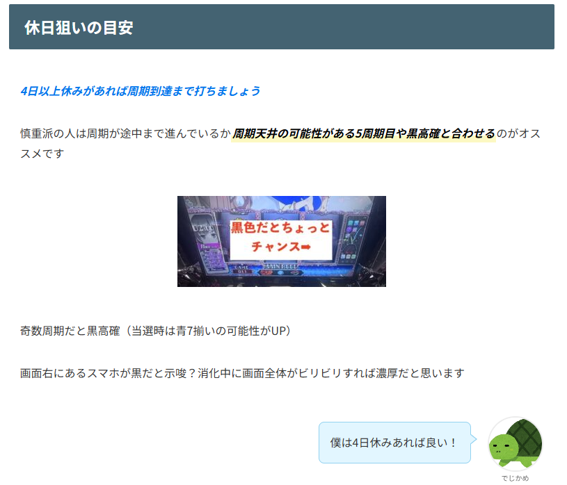
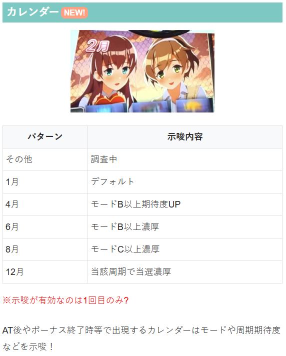
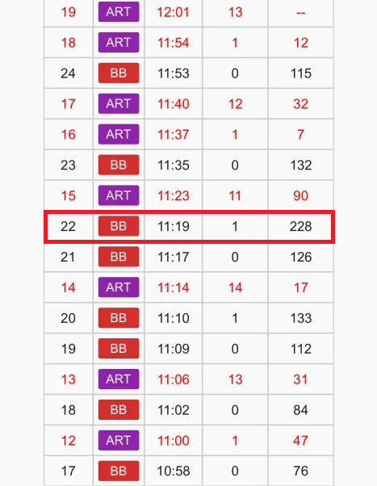
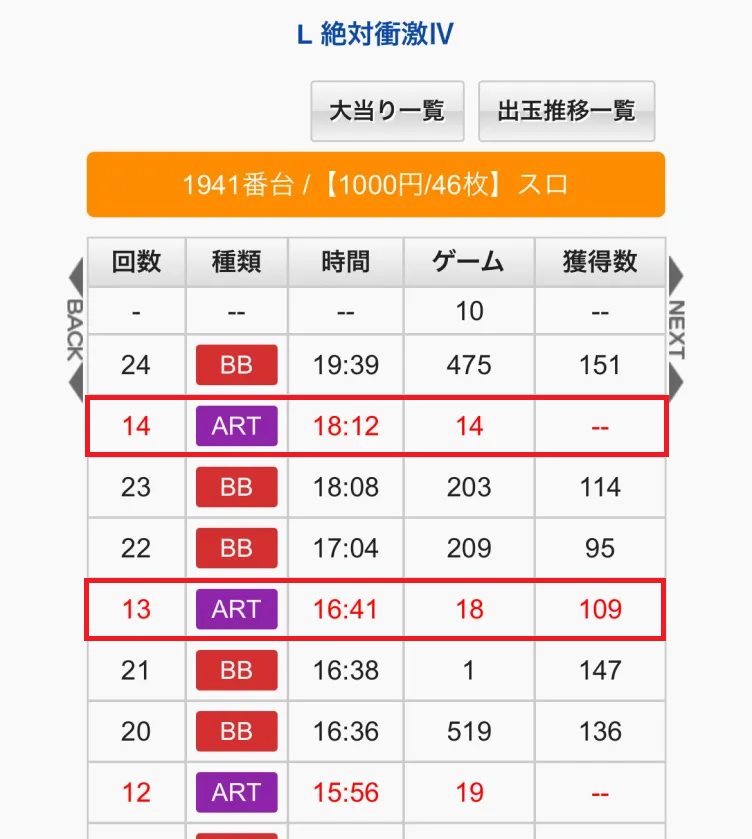
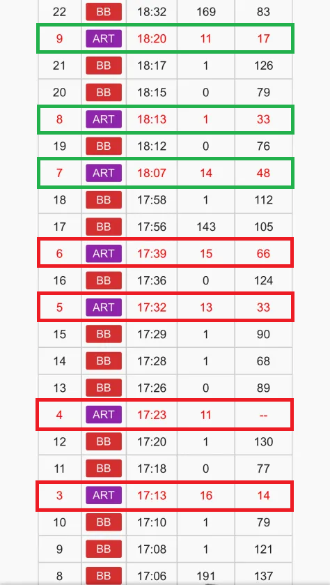
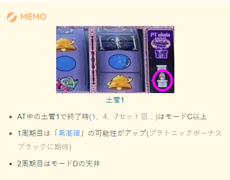
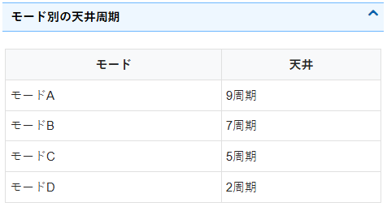

絶対衝激IV


狙い目
周期到達後に抽選をするタイプ。周期はメニュー画面から確認可能。
周期到達（日曜到達）まで約80G。前兆含めて1周期100Gくらい？
【リセット狙い】
3周期目途中（水曜か木曜） or 3周期目から
リセット0Gからの1周期狙いの方法
※2Gカニ歩きとなる可能性が高いため店舗によっては注意が必要
2G回して曜日と休日数を確認。以下の場合はやめ。それ以外は1周期のみ消化。
・月曜、休日2日以下
・火曜、休日1日
【ゲーム数天井狙い】
7周期目途中（水曜か木曜） or 7周期目から
天井短縮時（1.4.7…セット終了） 3周期目途中（水曜か木曜） or 3周期目から
有利切れ後（綾覚醒ループ後）1周期目から
※有利切れ後はモードD（2周期天井）
※1.4.7…と3の倍数の次のセット数で終了した場合は、次回モードC以上になる。（5周期天井）
【スマホレベル、曜日狙い】
スマホレベル
緑以上 当該周期消化まで
黄 火曜か水曜かつ、まだ休日が3日以上あれば当該周期まで？
金曜 黄以上で当該周期消化まで
周期狙い（月曜から打つ場合）
奇数周期（黒高確あり） 休日4日以上
偶数周期 休日5日以上


【示唆関連の押し引きについて】
カレンダー
CZやボーナス終了時等で出現するカレンダーはモードや周期期待度などを示唆!?
「12月」 当該周期当選濃厚
「11月」 モードD示唆？
「8月」 モードC以上濃厚
「１月」がデフォルト？他の月はモードBからDの示唆？

【有利区間関連狙い】
不明
やめ時
AT終了後コンティニュー消化してやめ？
有利切れ後は2周期目消化まで？
その他
有利切れ履歴
ボーナス履歴の獲得枚数は基本的に100枚前後（最大160枚くらい）だが、エンディング発生時は差枚+2400枚で終わるようにするためか獲得枚数が多い履歴が出てくる。現状は差枚以外で有利切れの条件は不明。（例えば差枚プラスで上位AT終了時や上位AT突入時等で有利切れとかはあるかもしれない）

AT駆け抜け履歴
駆け抜け時は、BBの後にARTの粒が1つの履歴になる。AT直撃時も1つの場合は駆け抜けで良さそう？
以下履歴の赤枠が駆け抜け。

ATセット数のカウント方法
履歴からはARTの回数がそのままセット数となる。赤枠は4セットで終了。緑枠は3セットで終了。
1.4.7…と3の倍数の次のセット数で終了した場合は、次回モードC以上になる。


